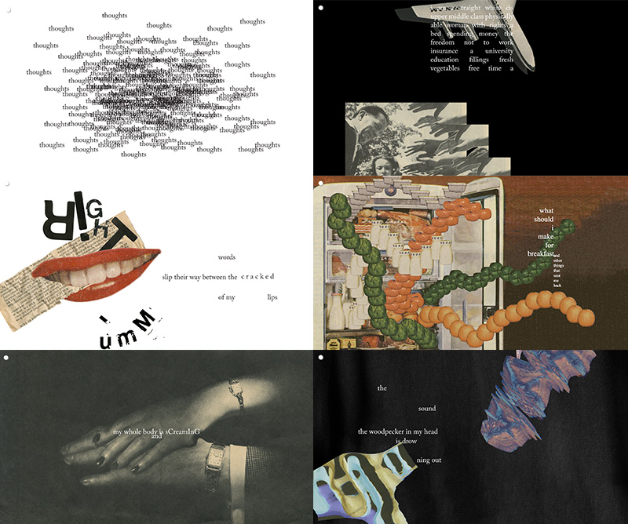
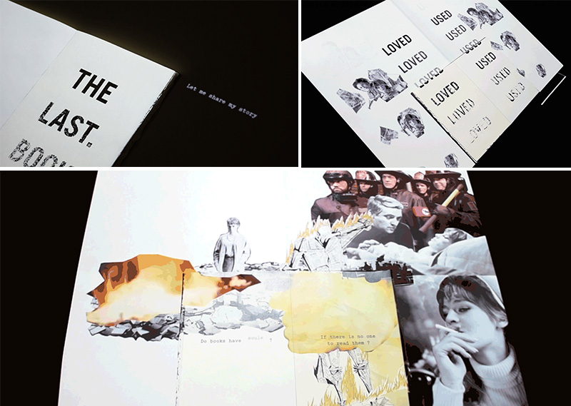
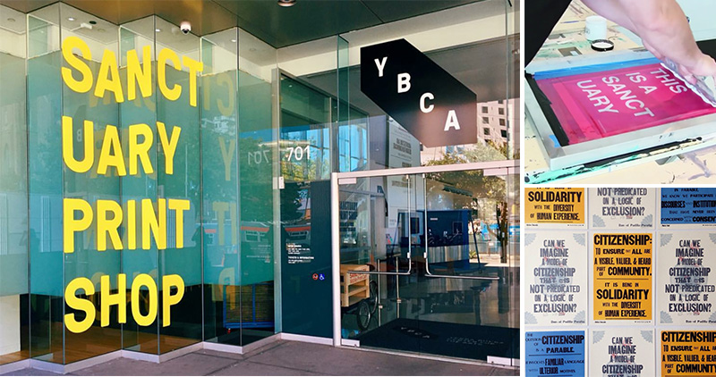

My three points of research for this project draws on both technical and conceptual elements I would like to include in my final project. All research titles are links to the sources of the projects!
thingsithought.today
This website features several works of interactive poetry. The designer, Lauren Holden, takes photoshopped imagery, sound bites, and dynamic text to let the reader experience each piece in its entirety. I would like to think that this would be what spoken word through a computer screen would feel like. By scrolling through the page, the user activates the various elements of each poem. I want my work to feel as immersive and resonate as strongly with the user as Holden’s work does for me. I want to push the limits of images and text to create something that can be so dynamic.
The Last Book
“The story was written by [Angela Nguyen], from the Last Book’s perspective; it tells the journey of the book being loved and then left behind.” This sentence is from Nguyen’s portfolio. They used Processing and the flipping of the pages of a physical book to trigger projections onto the surface of the pages. I feel that storytelling is one of the most compelling roles a designer can embody, and I want to be able to portray not only stories of trauma and suffering, but stories of hope and healing, of restorative justice and of transformative love into the work I’ll (hopefully) do for this class.
The next point of research focuses on analog art, rather than digital. However, I wanted to include these in my comparative research because they offer elements of interactivity as well as community art and artivism (the intersection of art and activism). I feel that artivism and artivist movements will be a primary source of inspiration for this project. I feel hopeful and healed by how people in community work navigate their struggles (and their community’s struggles) through visual mediums, and hope by looking to their work to guide me, I can convey those same feelings for my audience.
YBCA Sanctuary Print Shop
 During the summer, the Yerba Buena Center for the Arts featured a temporary “Sanctuary Print Shop” where people could enter the shop and learn how to use silk screens for free. Materials were provided and you could even take the posters home! This space was also meant for educating the public on undocumented immigrants, deportation, immigration laws, and the importance of sanctuary cities like San Francisco. I participated in one of these sessions after my summer internship ended, and the experience was wonderful. This exhibit gave me the perfect combination of interactivity, impact / purpose, immersiveness, and enjoyment. I believe that design should be done for something other than yourself, for a “greater purpose” if you will, but it’s also important to make the experience you’re creating enticing, and fun. After all, “the role of the artist is to make the revolution irresistible.”
Note: Pictures of the YBCA Sanctuary Print Shop were taken from their instagram